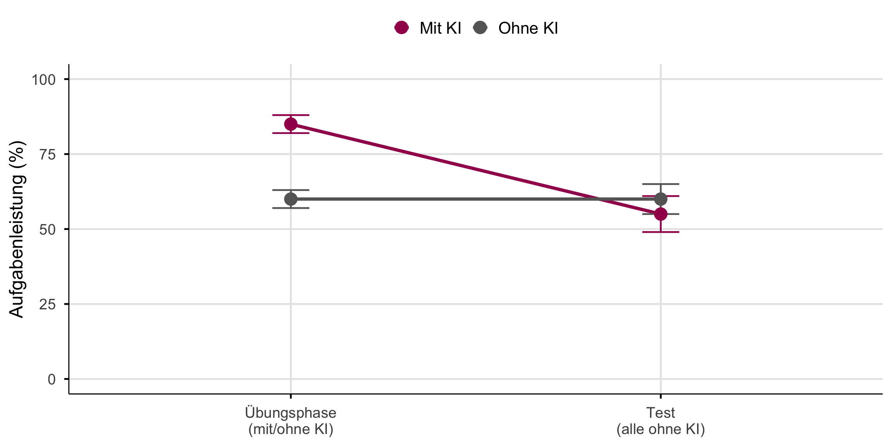
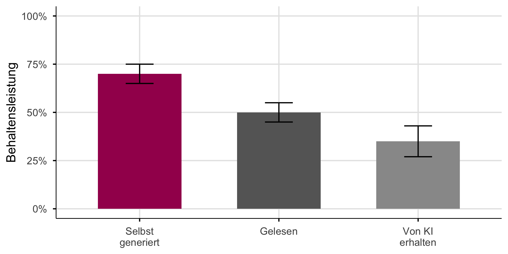

![]()

KI in der Hochschulbildung
Werkzeuge für Experten, Herausforderungen für Lernende
Ein überraschendes Ergebnis
Mit KI-Zugang:
48% mehr Aufgaben
korrekt gelöst
Ohne KI (später):
17% schlechter
als die Kontrollgruppe
Quelle: Bastani u. a. (2025):
~1000 Gymnasiasten, GPT-4 Zugang während Mathe-Übungen
Das Paradox

Aufgabenleistung ≠ Lernen
Das Nadelöhr des Lernens
Kernaussage: Alles Lernen muss durch das Nadelöhr des Arbeitsgedächtnisses (Sweller 2024).
Erwünschte Schwierigkeiten
“Conditions that slow the rate of apparent learning often optimize long-term retention and transfer.”
Robert Bjork (Bjork und Bjork 2011)
Schwerer fühlt sich schlechter an, ist aber besser für langfristiges Lernen.
Die vier Strategien
Selbst generieren
Eigene Antworten formulieren
Verteilt lernen
Zeitliche Abstände einbauen
Aktiv abrufen
Wissen aus dem Gedächtnis holen
Variieren
Themen und Aufgaben mischen
KI kann jede dieser Strategien untergraben, wenn sie die kognitive Arbeit übernimmt.
Der Generierungseffekt

Selbst generierte Information wird besser behalten (Slamecka und Graf 1978).
Wenn KI generiert, was Studierende selbst produzieren sollten, entfällt der Lerneffekt.
Der Generierungseffekt ist nicht neu. Immer wenn Technologie kognitive Arbeit übernimmt, sehen wir ähnliche Muster…
Historische Analogien

Das Muster wiederholt sich. Aber: KI ist breiter als GPS oder Taschenrechner.
Die entscheidende Frage
Dasselbe Werkzeug, unterschiedliche Ergebnisse.
Taschenrechner helfen Mathematikern, können aber Lernenden schaden.
GPS unterstützt Taxifahrer, schwächt aber das räumliche Gedächtnis von Neulingen.
Die Frage ist nicht ob KI, sondern wer davon profitiert.
Die Antwort liegt in dem, was Experten von Lernenden unterscheidet.
Was Experten sehen

Novize: sieht Einzelteile
“64 Felder, 32 Figuren, viele Möglichkeiten”
. . .
Experte: sieht Muster und Bedeutung
“Sizilianische Verteidigung, Königsangriff möglich, Schwäche auf f7”
. . .
Experten speichern Wissen in Chunks: vernetzte Wissensstrukturen, die automatisch abgerufen werden (Groot und Groot 1978; Chase und Simon 1973).
Der Expertise-Umkehr-Effekt
Interaktiv: Klicke auf die Prozentwerte, um zu sehen, wie sich die optimale Lehrmethode je nach Vorwissen verändert.
config = ({
// Color palette
colors: {
highSupport: "#A3195B",
lowSupport: "#666666",
neutral: "#333",
background: "#f5f5f5"
},
// Line equations: y = intercept + slope * x
// Lines cross where: highIntercept + highSlope*x = lowIntercept + lowSlope*x
lines: {
high: { intercept: 65, slope: -0.4 },
low: { intercept: 25, slope: 0.4 }
},
// Input options
steps: [0, 20, 40, 60, 80, 100],
defaultValue: 20,
// Plot dimensions
plot: {
width: 900,
height: 480,
margins: { left: 70, bottom: 60, top: 30, right: 40 }
},
// Labels
labels: {
highSupport: "Hohe Unterstützung",
lowSupport: "Niedrige Unterstützung",
highExamples: ["📖 Worked Examples", "🧭 Direkte Instruktion"],
lowExamples: ["🧩 Problembasiertes Lernen", "🔍 Eigene Lösungswege"]
}
})
// =============================================================================
// Derived values: Computed from config (no magic numbers)
// =============================================================================
// Crossover point: solve for x where both lines intersect
crossoverPoint = {
const { high, low } = config.lines;
return (high.intercept - low.intercept) / (low.slope - high.slope);
}
// Helper function to calculate y-value on a line
calcY = (line, x) => line.intercept + line.slope * x
// =============================================================================
// State: Single source of truth for user input (hidden, controlled by buttons)
// =============================================================================
viewof vorwissen = {
const input = Inputs.radio(config.steps, {
value: config.defaultValue,
label: "",
format: x => x + "%"
});
input.style.display = "none";
return input;
}
// =============================================================================
// Reactive calculations based on current state
// =============================================================================
currentState = {
const x = vorwissen ?? config.defaultValue;
const highY = calcY(config.lines.high, x);
const lowY = calcY(config.lines.low, x);
const isHighBetter = x <= crossoverPoint;
return {
x,
highY,
lowY,
isHighBetter,
optimalY: isHighBetter ? highY : lowY,
suboptimalY: isHighBetter ? lowY : highY,
optimalLabel: isHighBetter ? config.labels.highSupport : config.labels.lowSupport,
optimalColor: isHighBetter ? config.colors.highSupport : config.colors.lowSupport,
suboptimalColor: isHighBetter ? config.colors.lowSupport : config.colors.highSupport
};
}
// =============================================================================
// Plot: Visualization with all marks
// =============================================================================
expertisePlot = {
const { colors, lines, plot, labels } = config;
const { x, highY, lowY, isHighBetter, optimalY, suboptimalY, optimalColor, suboptimalColor } = currentState;
// Generate line data points
const highLineData = [{x: 0, y: calcY(lines.high, 0)}, {x: 100, y: calcY(lines.high, 100)}];
const lowLineData = [{x: 0, y: calcY(lines.low, 0)}, {x: 100, y: calcY(lines.low, 100)}];
// Label positions (relative to line endpoints)
const labelOffsetY = 7;
const exampleBaseY = calcY(lines.high, 0) + labelOffsetY;
return Plot.plot({
width: plot.width,
height: plot.height,
marginLeft: plot.margins.left,
marginBottom: plot.margins.bottom,
marginTop: plot.margins.top,
marginRight: plot.margins.right,
style: { fontSize: "16px" },
x: {
domain: [0, 100],
label: "Vorwissen →",
labelOffset: 45,
ticks: [0, 50, 100],
tickFormat: d => d === 0 ? "Niedrig" : d === 50 ? "Mittel" : "Hoch"
},
y: {
domain: [0, 100],
label: "↑ Lerneffekt",
labelOffset: 50,
grid: true
},
marks: [
// Support lines
Plot.line(highLineData, {x: "x", y: "y", stroke: colors.highSupport, strokeWidth: 3}),
Plot.line(lowLineData, {x: "x", y: "y", stroke: colors.lowSupport, strokeWidth: 3}),
// Vertical position indicator
Plot.ruleX([x], {stroke: colors.neutral, strokeWidth: 1.5, strokeDasharray: "8,5"}),
// Suboptimal dot (smaller, faded)
Plot.dot([{x, y: suboptimalY}], {
x: "x", y: "y",
fill: suboptimalColor,
r: 8,
opacity: 0.4
}),
// Optimal dot (larger, prominent with white stroke)
Plot.dot([{x, y: optimalY}], {
x: "x", y: "y",
fill: optimalColor,
r: 14,
stroke: "white",
strokeWidth: 3
}),
// High support examples (left side, near line start)
Plot.text([{x: 15, y: exampleBaseY}], {
x: "x", y: "y", text: [labels.highExamples[0]], fill: colors.highSupport, fontSize: 13
}),
Plot.text([{x: 15, y: exampleBaseY - 6}], {
x: "x", y: "y", text: [labels.highExamples[1]], fill: colors.highSupport, fontSize: 13
}),
// Low support examples (right side)
Plot.text([{x: 85, y: exampleBaseY}], {
x: "x", y: "y", text: [labels.lowExamples[0]], fill: colors.lowSupport, fontSize: 13
}),
Plot.text([{x: 85, y: exampleBaseY - 6}], {
x: "x", y: "y", text: [labels.lowExamples[1]], fill: colors.lowSupport, fontSize: 13
}),
// Line labels (near line ends)
Plot.text([{x: 88, y: calcY(lines.high, 100) - 5}], {
x: "x", y: "y", text: [labels.highSupport], fill: colors.highSupport, fontSize: 15, fontWeight: "bold"
}),
Plot.text([{x: 12, y: calcY(lines.low, 0) - 5}], {
x: "x", y: "y", text: [labels.lowSupport], fill: colors.lowSupport, fontSize: 15, fontWeight: "bold"
})
]
});
}
// =============================================================================
// Button Group: Custom styled segmented control
// =============================================================================
buttonGroup = {
const { x, optimalColor } = currentState;
const { colors, steps } = config;
const buttonStyle = (isSelected, selectColor) => `
padding: 12px 18px;
border: none;
background: ${isSelected ? selectColor : colors.background};
color: ${isSelected ? 'white' : '#333'};
font-size: 1em;
font-weight: ${isSelected ? 'bold' : 'normal'};
cursor: pointer;
border-right: 1px solid #ddd;
transition: background 0.15s ease;
`;
const container = html`<div style="display: flex; border-radius: 8px; overflow: hidden; border: 2px solid #ddd;"></div>`;
steps.forEach(v => {
const isSelected = x === v;
const selectColor = v <= crossoverPoint ? colors.highSupport : colors.lowSupport;
const btn = html`<button style="${buttonStyle(isSelected, selectColor)}">${v}%</button>`;
btn.onclick = () => {
viewof vorwissen.value = v;
viewof vorwissen.dispatchEvent(new Event('input', {bubbles: true}));
};
container.appendChild(btn);
});
return container;
}
// =============================================================================
// Layout: Compose all elements
// =============================================================================
html`<div style="display: flex; align-items: center; gap: 40px;">
<div>${expertisePlot}</div>
<div style="display: flex; flex-direction: column; align-items: center; gap: 20px; min-width: 280px;">
<div style="font-weight: bold; font-size: 1.1em;">Vorwissen des Lernenden</div>
<div>${buttonGroup}</div>
<div style="font-size: 1.3em; text-align: center; padding: 15px; background: ${currentState.optimalColor}22; border-radius: 8px; border-left: 4px solid ${currentState.optimalColor};">
<span style="color: ${currentState.optimalColor}; font-weight: bold;">${currentState.optimalLabel}</span><br>
<span style="font-size: 0.8em; color: #666;">ist effektiver</span>
</div>
</div>
</div>`
Der Expertise-Umkehr-Effekt (Kalyuga 2009).
Warum Experten profitieren, Lernende nicht
Experten:
- Können Routine auslagern
- Können KI-Output bewerten
- Mehr Kapazität für Komplexes
Lernende:
- Können nicht bewerten
- Überspringen Grundlagen
- Risiko: “Fliessende Inkompetenz”
Dasselbe Werkzeug, fundamental unterschiedliche Auswirkungen.
Kritisches Denken braucht Fachwissen
“Critical thinking is not a skill. There is not a set of critical thinking skills that can be acquired and deployed regardless of context.”
Daniel Willingham (Willingham 2008)
Biomedizin-Experte:
Erkennt, wenn ChatGPT bei Biochemie falsch liegt
Novize:
Kann diese Bewertung nicht vornehmen
Du kannst nicht kritisch bewerten, was du nicht verstehst.
Warum ist Fachwissen so entscheidend? Weil es bestimmt, ob KI deine Kognition erweitert oder ersetzt.
Kognition erweitern vs. ersetzen
Kognition erweitern:
- Mensch bleibt kognitiv engagiert
- Werkzeug verstärkt, ersetzt nicht
- Fähigkeiten bleiben erhalten
Kognition ersetzen:
- Mensch wird passiv
- Werkzeug übernimmt das Denken
- Abhängigkeit entsteht
Dasselbe Werkzeug kann beides sein, abhängig von der Nutzung (Clark 2025).
Die Sequenzierungsfrage
Novize ——— Schwelle? ——— Experte
- Die Schwelle ist unbekannt und empirisch nicht bestimmt
- Sie variiert nach Domäne und Person
- Der Expertise-Umkehr-Effekt erfordert dynamische KI-Nutzungsempfehlungen
Wer profitiert von KI-Werkzeugen? Wer nicht?
Die Kernaussage
KI-Werkzeuge sind für Experten gemacht.
Sie machen Experten produktiver.
Lernende profitieren oft nicht, weil Lernen die kognitive Anstrengung erfordert, die KI zu eliminieren droht.
Lernende brauchen erst das Fundament, das kritische KI-Nutzung ermöglicht.
Was bedeutet das für die Lehre?
Anstrengung ist das Signal
KI als Tutor, nicht als Antwortgeber
Expertise bestimmt den Nutzen
Wenn Lernen sich zu leicht anfühlt, findet es wahrscheinlich nicht statt.
KI soll Denkprozesse anregen, nicht ersetzen.
Dasselbe Werkzeug wirkt unterschiedlich je nach Vorwissen.
Grundlagen BEVOR Werkzeuge
Referenzen
Bastani, Hamsa, Osbert Bastani, Alp Sungu, Haosen Ge, Özge Kabakcı, und Rei Mariman. 2025. „Generative AI Without Guardrails Can Harm Learning: Evidence from High School Mathematics“. Proceedings of the National Academy of Sciences of the United States of America 122 (26): e2422633122. https://doi.org/10.1073/pnas.2422633122.
Bjork, Elizabeth Ligon, und Robert A. Bjork. 2011. „Making Things Hard on Yourself, but in a Good Way: Creating Desirable Difficulties to Enhance Learning“. In Psychology and the Real World: Essays Illustrating Fundamental Contributions to Society, 56–64. New York, NY, US: Worth Publishers.
Chase, William G., und Herbert A. Simon. 1973. „Perception in Chess“. Cognitive Psychology 4 (1): 55–81. https://doi.org/10.1016/0010-0285(73)90004-2.
Clark, Andy. 2025. „Extending Minds with Generative AI“. Nature Communications 16 (1): 4627. https://doi.org/10.1038/s41467-025-59906-9.
Dahmani, Louisa, und Véronique D. Bohbot. 2020. „Habitual Use of GPS Negatively Impacts Spatial Memory During Self-Guided Navigation“. Scientific Reports 10 (1): 6310. https://doi.org/10.1038/s41598-020-62877-0.
Groot, Adriaan D. De, und Adrianus Dingeman de Groot. 1978. Thought and Choice in Chess. Walter de Gruyter. https://books.google.com?id=EI4gr42NwDQC.
Kalyuga, Slava. 2009. „The Expertise Reversal Effect“. In Managing Cognitive Load in Adaptive Multimedia Learning, 58–80. IGI Global Scientific Publishing. https://doi.org/10.4018/978-1-60566-048-6.ch003.
Slamecka, Norman J., und Peter Graf. 1978. „The Generation Effect: Delineation of a Phenomenon“. Journal of Experimental Psychology: Human Learning and Memory 4 (6): 592–604. https://doi.org/10.1037/0278-7393.4.6.592.
Sparrow, Betsy, Jenny Liu, und Daniel M. Wegner. 2011. „Google Effects on Memory: Cognitive Consequences of Having Information at Our Fingertips“. Science (New York, N.Y.) 333 (6043): 776–78. https://doi.org/10.1126/science.1207745.
Sweller, John. 2024. „Cognitive Load Theory and Individual Differences“. Learning and Individual Differences 110 (Februar): 102423. https://doi.org/10.1016/j.lindif.2024.102423.
Willingham, Daniel T. 2008. „Critical Thinking: Why Is It So Hard to Teach?“ Arts Education Policy Review 109 (4): 21–32. https://doi.org/10.3200/AEPR.109.4.21-32.
KI in der Lehre: Refresher